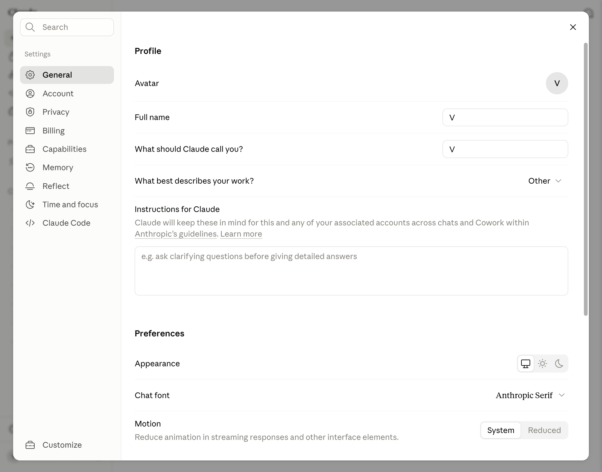

Claude.ai · кнопка за кнопкой · 01
Как подключить Claude из России
Путь от проверки подключения до первого открытого чата. На каждом этапе показано, какой экран появится и что выбрать
Эта инструкция относится к работе в чате Claude.ai. Для платных подписок рекомендации будут строже и появятся отдельным документом. Ссылка на него будет добавлена сюда позже
В инструкции показан рекомендуемый вариант регистрации и входа через Google-аккаунт с почтой Gmail. Claude также поддерживает другие адреса, но отдельно их не разбираем: логика входа та же
До открытия Claude
Что подготовить
Для рекомендуемого маршрута понадобятся три вещи
- 01Стабильный VPN со страной, где Claude доступен
- 02Google-аккаунт с Gmail для рекомендуемого в этой инструкции способа входа
- 03Реальный зарубежный телефонный номер, принимающий SMS, если Claude запросит подтверждение
Google-аккаунт уже есть
Использовать существующий аккаунт
Если для нейросетей уже создан отдельный Google-аккаунт, используй именно его. Открой Gmail и убедись, что ты помнишь пароль
Google-аккаунта нет
Сначала создать аккаунт
Пройди регистрацию с включённым VPN поддерживаемой страны. Не выбирай российскую локацию для нового аккаунта
Шаг 1
Проверить VPN
Выбрать страну и сохранить IP
Включи VPN и выбери страну, где Claude доступен. Если приложение предлагает только страну, этого достаточно: отдельный сервер искать не нужно
Открой 2ip.ru и запиши IP целиком, например 198.51.100.42, или сделай скриншот. Через день или два снова зайди на 2ip.ru с включённым VPN и сравни цифры. Флаг страны может остаться тем же, а IP измениться
Смотри на цифры адреса, а не только на страну. Частая смена IP может привести к дополнительной проверке или блокировке аккаунта
Результат: 2ip.ru показывает выбранную зарубежную страну, а IP сохранён для повторной проверки
Шаг 2
Подготовить Google-аккаунт
Если Gmail уже есть
Открой Gmail в отдельной вкладке. Если вход работает и ты помнишь пароль, этот аккаунт можно использовать для входа в Claude.ai через кнопку Continue with Google. Новый аккаунт создавать не нужно
Результат: Gmail открывается, и ты помнишь пароль
Если Google-аккаунта нет
Не выключая VPN, открой страницу создания Google-аккаунта. Выбери Создать аккаунт → Для личного использования
Заполни имя и дату рождения, придумай адрес Gmail и пароль. Если Google запросит телефон, укажи зарубежный номер, к которому у тебя сохранится доступ. Не выбирай российскую локацию в новом аккаунте
Полностью закончи регистрацию Google и открой Gmail. После этого переходи в Claude, оставив тот же VPN
Результат: почта Gmail открывается, аккаунт не привязан к российской локации
Шаг 3
Открыть Claude и войти через Google
Открыть адрес claude.ai
Введи в адресную строку браузера claude.ai и нажми Enter. На экране входа нажми Continue with Google, выбери подготовленный аккаунт и подтверди вход

- 1 Адрес claude.ai/login
- 2 Кнопка Continue with Google
Результат: Claude создаёт новый аккаунт или переходит к проверке телефонного номера
Шаг 4
Подтвердить номер, если Claude запросил SMS
Использовать постоянный зарубежный номер
Для подтверждения нужен постоянный зарубежный телефонный номер. Российский номер не подходит. Используй реальную зарубежную SIM или eSIM, которая принимает обычные SMS
Страна номера должна совпадать со страной IP. Для платной подписки понадобится ещё и карта той же страны, но это будет разобрано в отдельной инструкции. Сохрани доступ к номеру: Claude может снова запросить подтверждение при следующем входе
Номера VoIP и номера, которые не принимают обычные SMS, могут быть отклонены
Результат: код принят, Claude открывает экран нового чата
Не использовать номер из SMS-активатора
Виртуальные номера из SMS-активаторов массово находятся в чёрных списках. Такой номер мог использоваться много раз и не пройти проверку Anthropic
Для регистрации нужен реальный номер с постоянным доступом, а не одноразовая аренда на несколько минут
Если номер отклонён: не отправляй его повторно много раз. Возьми другую реальную SIM или eSIM той же страны, что IP
Шаг 5
Проверить первый чат
Отправить короткое сообщение
Напиши в новом чате короткий вопрос. Если Claude отвечает, вход завершён
Для следующих входов сохрани выбранную страну, записанный IP, способ входа и доступ к тому же номеру подтверждения
На следующий вход: включи VPN, выбери ту же страну, открой claude.ai и используй тот же аккаунт
Если возникла ошибка
Что проверить, если вход не получился
Claude пишет, что сервис недоступен в регионе
Закрой вкладку, отключи другие VPN и прокси, выбери в VPN поддерживаемую страну, проверь её на 2ip.ru и открой Claude заново
Google предлагает российскую локацию
Не продолжай регистрацию в этом окне. Проверь VPN, открой отдельный чистый профиль браузера и начни создание Google-аккаунта заново
Российский номер не принимается
Используй реальную зарубежную SIM или eSIM, которая принимает SMS. Страна номера должна совпадать со страной IP
Код не приходит
Проверь код страны и убедись, что номер принимает обычные SMS. Временный или VoIP-номер мог быть отклонён, тогда потребуется другая реальная SIM или eSIM
После входа снова открывается стартовый экран
Не переключай страну VPN. Закрой лишние вкладки Claude и повтори вход в отдельном профиле браузера
Финальная проверка
Семь пунктов перед первым сообщением
Подключение подготовлено
- VPN включён, выбрана поддерживаемая страна
- IP записан или сохранён на скриншоте для повторной проверки
- Google-аккаунт с Gmail открывается, и ты помнишь пароль
- Для нового аккаунта не выбрана российская локация
- Не используется временная почта или адрес в доменах Яндекса и Mail.ru
- Есть реальный зарубежный телефонный номер той же страны, что IP
- Открыт адрес claude.ai, а не Claude Code
Этот гид будет дополняться разделами серии для новичков «Claude.ai: кнопка за кнопкой». Список готовых разделов и ссылки на них будут появляться ниже
Настройка под себя
Как рассказать Claude о себе
Один раз заполни имя, роль и правила ответов. Claude будет учитывать их в новых чатах, а память постепенно соберёт рабочий контекст
Открыть настройки
В левом нижнем углу Claude нажми на свои инициалы или имя. В открывшемся меню выбери Settings. В левой колонке настроек открой General
Результат: открыт экран Profile с полями имени, инструкций и настройками внешнего вида

- 1 Раздел General
- 2 Имя, роль и инструкции
- 3 Тема и шрифт
Шаг 2
Заполнить имя и постоянные инструкции
В поле What should Claude call you? напиши, как к тебе обращаться. В What best describes your work? выбери ближайшую роль
Поле Instructions for Claude важнее остальных: сюда попадают правила, которые Claude должен учитывать во всех чатах. Добавь только стабильный контекст - кто ты, чем занимаешься, какой формат ответа тебе подходит и чего делать нельзя
Кто я Меня зовут [имя]. Я [профессия или роль]. Работаю в [ниша] и помогаю [кому] получить [результат] Мои текущие задачи Чаще всего я прошу тебя помогать с [3-5 типов задач]. Сейчас мой главный приоритет: [цель] Контекст моей работы Мой продукт или проект: [что это]. Моя аудитория: [кто]. Важно учитывать: [ограничения, страна, платформа, уровень опыта] Как со мной разговаривать Обращайся ко мне на [ты или вы]. Отвечай [коротко или подробно], простым языком, без канцелярита и нейросетевых клише. Сначала давай готовый результат, затем коротко объясняй решение Как оформлять ответы Используй [абзацы, списки, таблицы] только когда они помогают. Не повторяй мой вопрос. Не добавляй длинное вступление. Если ответ можно дать в двух строках, дай его в двух строках Как принимать решения Не задавай вопрос, если ответ следует из контекста. Если данных действительно не хватает, задай один конкретный вопрос. Не выдумывай цифры, факты, ссылки и мой опыт Как проверять результат Перед финальным ответом проверь [факты, расчёты, ссылки, формат, ограничения]. Если что-то не проверено, назови это прямо Мои постоянные правила - [правило 1] - [правило 2] - [правило 3] Пример ответа, который мне нравится [вставь короткий реальный образец]
Результат: в новом чате Claude обращается к тебе правильно и соблюдает заданный формат без повторного объяснения
Шаг 3
Настроить тему и шрифт
На том же экране General прокрути до блока Preferences. В строке Appearance выбери системную, светлую или тёмную тему. В Chat font выбери шрифт, который легче читать
Эти настройки меняют только внешний вид Claude. На качество и содержание ответов они не влияют
Результат: длинные ответы удобно читать, глаза не устают от выбранной темы и шрифта
Шаг 4
Включить память и посмотреть, что в ней хранится
В левой колонке Settings открой Memory. Переключатель Generate memory from chats разрешает Claude собирать полезный контекст из разговоров. Создание памяти из истории может занять некоторое время
Ниже будут появляться темы памяти. Их можно просматривать, уточнять и удалять. Если хочешь исправить конкретный факт, напиши это Claude в строке внизу или прямо в обычном чате

- 1 Раздел Memory
- 2 Память из разговоров
- 3 Перенос из другого ИИ
Instructions
Правила, которые задаёшь ты
Язык, тон, формат и постоянные ограничения. Для важных требований это главное место
Memory
Контекст, который накапливает Claude
Проекты, предпочтения и факты, которые появляются в разговорах и меняются со временем
Инкогнито-чат не использует историю и память и не добавляет туда новый разговор. Отдельный разбор инкогнито появится дальше в этом гиде
Шаг 5
Перенести в Claude то, что уже знает о тебе ChatGPT
Если ты давно работаешь в ChatGPT, не обязательно заново собирать весь контекст вручную. В Claude открой Settings → Memory и найди блок Import memory from other AI providers. Кнопка Start import запускает встроенный перенос релевантных сведений из другого ИИ
Перенос может занять время. После него открой темы памяти и проверь, что Claude правильно понял твою роль, проекты и предпочтения. Это хороший старт, но постоянные правила ответа всё равно лучше продублировать в Instructions for Claude
Инструкция готовится Подробный перенос из ChatGPT в Claude появится по этой ссылке в ближайшие несколько днейФинальная проверка
Проверить настройку в новом чате
Открой новый обычный чат и спроси: «Что ты уже знаешь обо мне и как должен оформлять ответы?». Сравни ответ с инструкциями и темами памяти
Claude настроен под тебя
- Claude правильно обращается к тебе
- Верно называет твою роль, проект и аудиторию
- Соблюдает язык, тон и нужную длину ответа
- Не добавляет выдуманных фактов о тебе
- В Memory нет лишних или ошибочных сведений
Если что-то не совпало: постоянное правило исправь в Instructions, а неверный факт удали или уточни в Memory
Проверено 7 сентября 2026
Источники
Следующий шаг
От чата Claude.ai к Claude Code
Работа в чате Claude.ai - первый шаг, чтобы познакомиться с Claude и понять, что ты можешь ему поручить. В бесплатном ИИ-Лагере ты пойдёшь дальше: установишь Claude Code, начнёшь управлять им командами на русском языке и соберёшь своими руками то, что нужно твоему делу
Перейти в ИИ-Лагерь